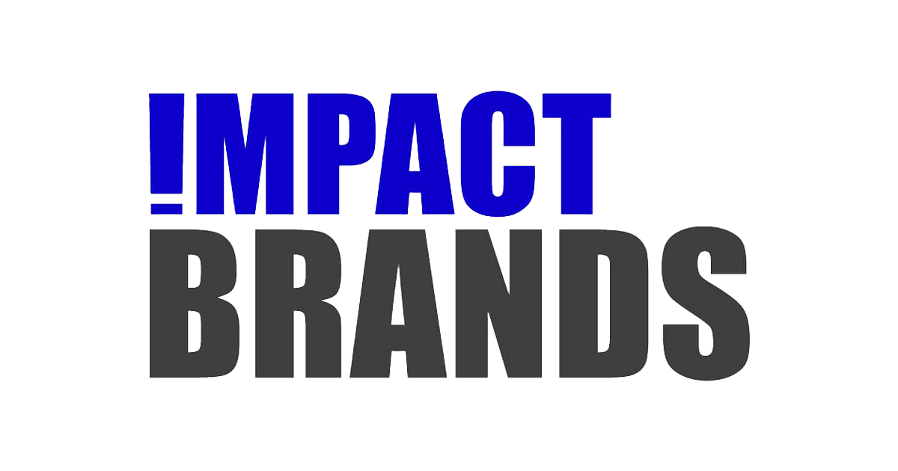

The next step after completing the brand visual guidelines for IMPACT BRANDS was updating the company's website. The existing site lacked a consistent style, with varied icons, font sizes, and misaligned margins and padding. Additionally, several sections, such as a full employee list with photos, were outdated and no longer practical for a fast-growing, remote company.
My goal was to streamline the design, reduce unnecessary content, and ensure the website aligned with the newly established brand guidelines. The result is a clean, modern website that reflects the company's evolving identity while improving usability and efficiency.

Audit of Existing Site
Reviewed the website's structure, identifying inconsistencies in design and unnecessary sections that were challenging to maintain.
Streamlining Content
Removed the extensive employee section and focused on highlighting key leadership and department heads, ensuring better content accuracy and privacy for employees.
Visual Design Updates
Refined font sizes, padding, and margins for consistency and updated icons, photos, and colors to align with the new brand guidelines.
Homepage Redesign
Created a minimal homepage that features a clear slogan and company name, catering to employees' remote work setups, where they often showcase the website on their laptops.
Improved Usability
Reduced excess text and sections to make the website more user-friendly, while ensuring it remains easy to maintain.